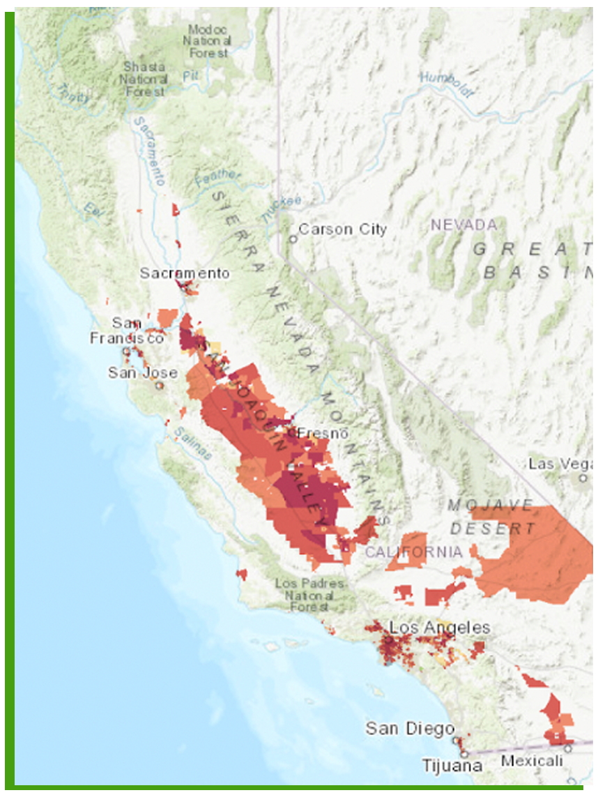
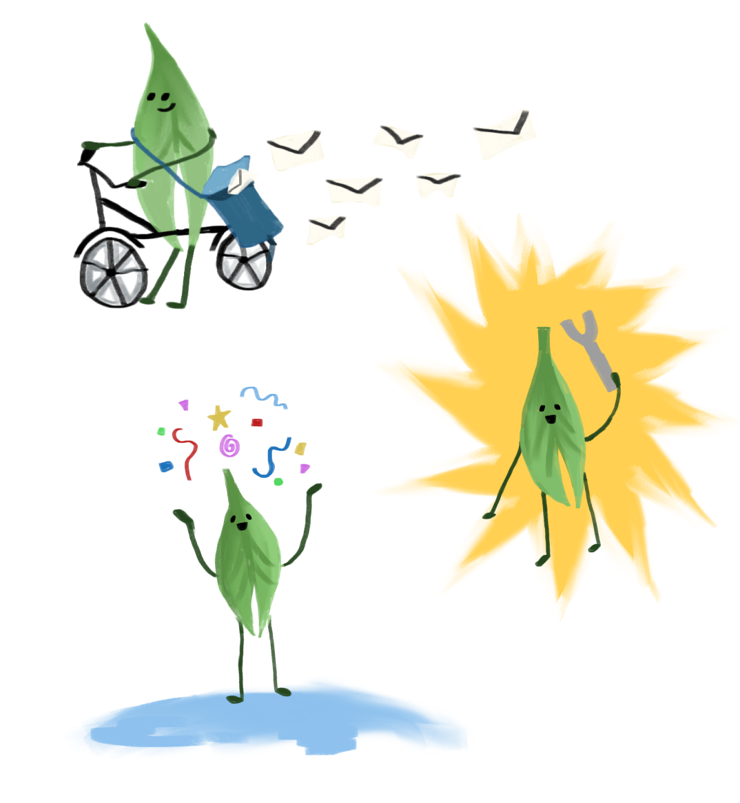
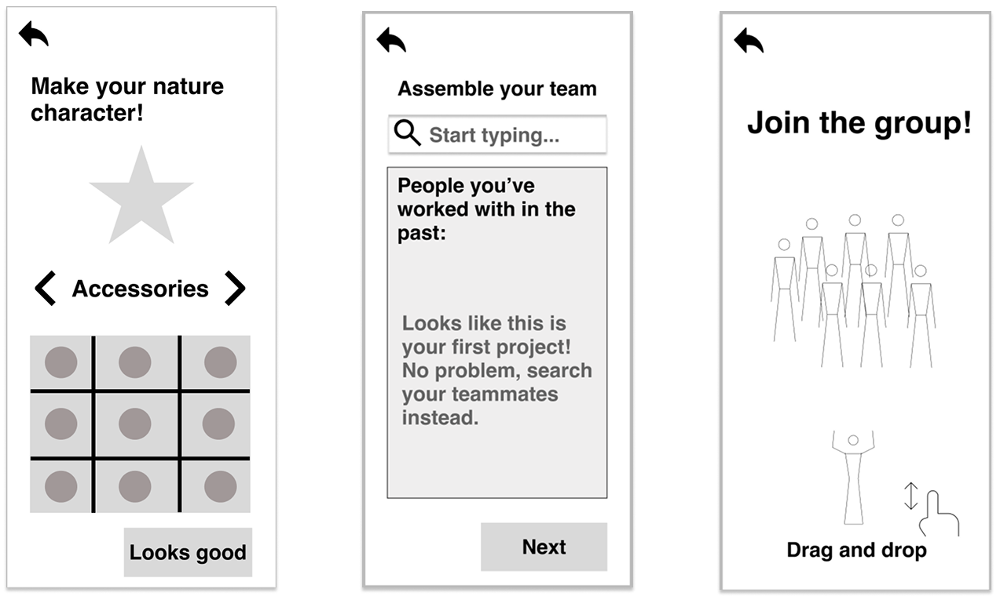
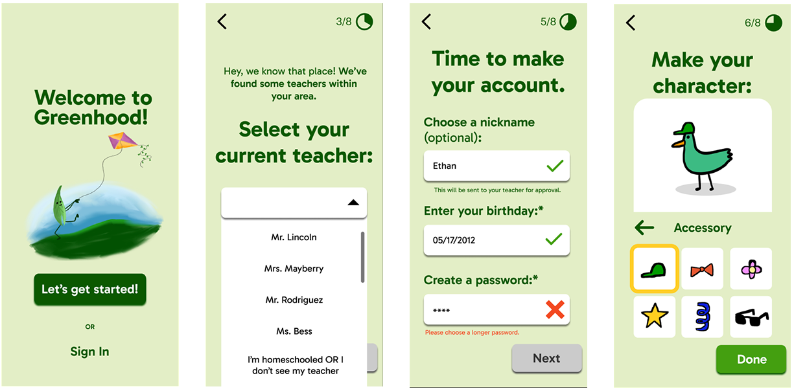
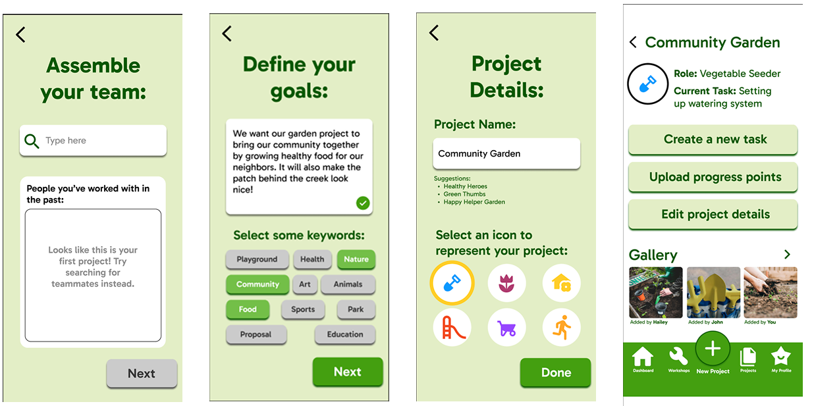
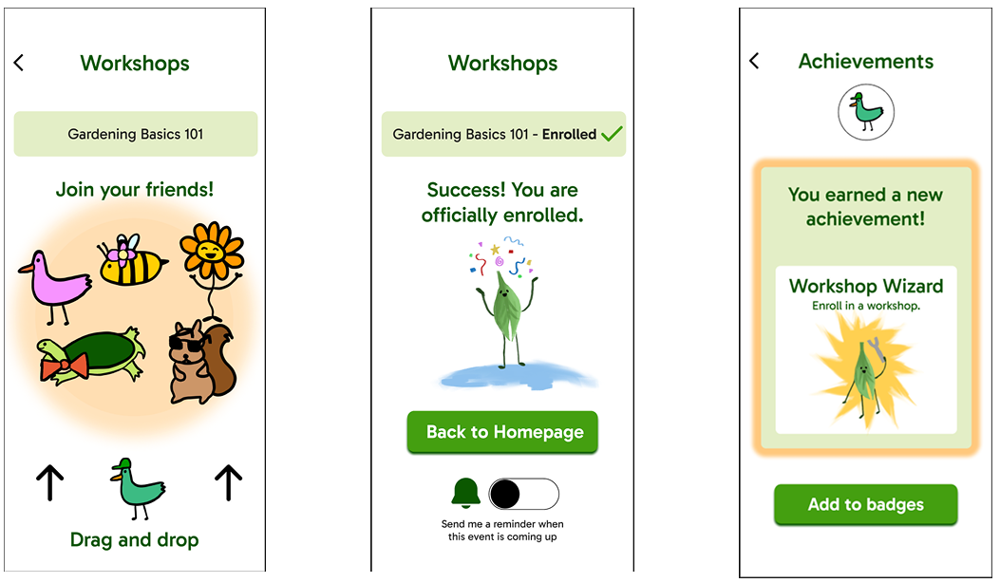

Greenhood
Role: Designer
|
Timeline: April 2025 to June 2025
|
Tools: Figma, Procreate
Overview:
When tasked to create an app centered around equity, I chose to focus on environmental justice, more specifically accessibility to green spaces. These natural spaces of healthy green environments reap many mental and physical health benefits. Low-income communities often lack green spaces due to multiple factors (redlining, zoning regulations, unequal investment, etc.) Members disproportionately feel the effects of pollution and environmental hazards.
My proposal resulted in creating an app that empowers youth to engage in project-based learning to create and enhance green spaces in their community. Greenhood results from combining green and neighborhood.
The Main Question(s):
Do kids lack the tools to think critically about their environment? How can I build a tool that creates a space for collaboration on issues they collectively identify?
The Process:
I began researching on underserved communities who are greatly affected by pollution. That's when I began focusing on the Central Valley. According to Trust for Public Land, while the Central Valley is the fastest growing and most rapidly diversifying regions in California, the region's parks and outdoor recreational spaces have not kept pace. In these cities, far too many children lack access to environmental education or the benefits of nature in their own backyards.

This led me to think of the app as a guiding process that helps users form their own ideas. David Driskell, author of Creating Better Cities with Children and Youth, says "young people's experience in transforming the physical environment — seeing real change that is a direct result of their own initiatives — can be a valuable exercise in community empowerment."
Initial design ideas revolved around having the user engaged in micro-interactions to keep their engagement and make it as though they were involved in this digital space as much as their real-world classroom. The app would serve as a planning, coordinating, and collaborative space to keep track of projects, but in-person interaction would of course come from the actual development of projects (i.e. creating a garden, planting trees, writing letters to representatives, etc.)



The Outcome:
I explored types of gamification and landed on a level and badge system where students could unlock achievements through their development of environmental projects to showcase on their profile. I developed a mascot and user customization within their profile completion.


I learned the importance of planning out entire functionality of an app.